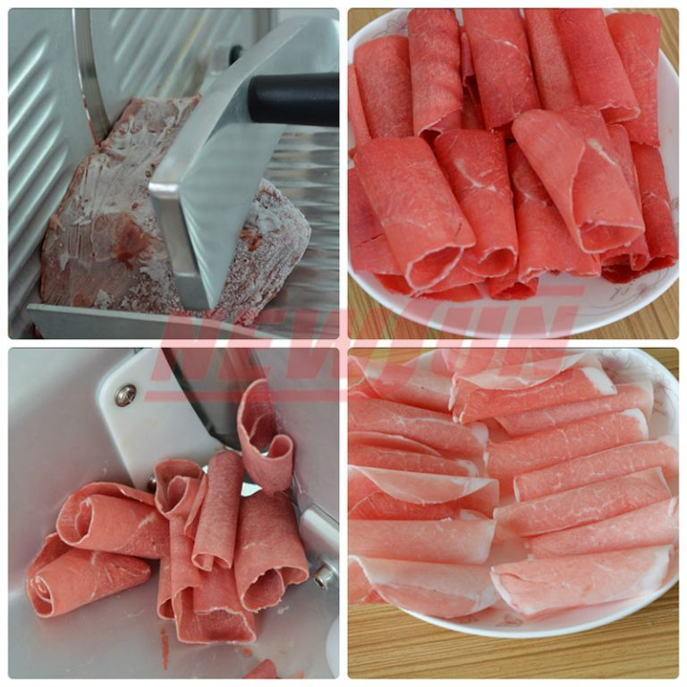
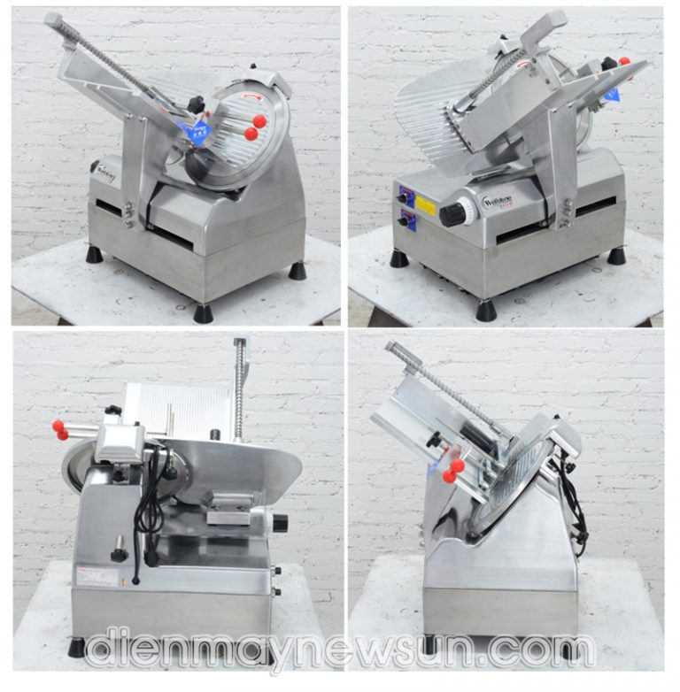

Tin tức > Hướng dẫn sử dụng máy thái thịt tự độngSL 300E hiệu quả, bền lâu
Hướng dẫn sử dụng máy thái thịt tự độngSL 300E hiệu quả, bền lâu
2. Cách vệ sinh máy thái thịt tự động SL 300E
3. Cách bảo quản máy thái thịt tự động SL 300E đúng cách
4. Một số điều cần biết khi sử dụng máy thái thịt tự động SL 300E
SL 300E là sản phẩm thuộc dòng máy thái thịt tự động, chuyên dùng để thái các loại thịt chín, thịt sống hoặc thịt se lạnh. Máy được dùng phổ biến tại các nhà hàng, quán lẩu hoặc các bếp ăn công nghiệp quy mô lớn. Để máy thái thịt luôn bền bỉ, có tuổi thọ cao, bài viết sau đây sẽ hướng dẫn bạn cách sử dụng máy thái thịt tự động SL 300E hiệu quả.
Các bước sử dụng máy thái thịt tự động SL 300E
Để sử dụng máy thái thịt tự động SL 300E, bạn thực hiện tuần tự theo các bước sau đây:
Bước 1:Vặn núm bên thân máy để điều chỉnh độ dày mỏng của thịt thành phẩm tới mức phù hợp với nhu cầu.
Bước 2:Cho khối thịt cần thái lên bàn thái sau đó cố định miếng thịt thật chặt. Thông thường 1 miếng thịt có trọng lượng từ 2 – 4kg là vừa đủ.
Bước 3: Đặt khay hứng thịt bên dưới đầu ra của máy. Thịt sẽ tự động rơi xuống khay chứa ngay sau khi thái.
Bước 4:Bật công tắc để gá đỡ thịt bắt đầu hoạt động và đẩy miếng thịt tiến gần đến lưỡi dao đang quay tròn.
Bước 5:Bạn chỉ cần đợi khối thịt được thái xong là có thể lấy ra sử dụng.
* Lưu ý: Trong trường hợp cần thái thịt dạng sợi, bạn hãy lấy phần thịt vừa thái ra, xếp các lát chồng lên nhau thành khối rồi đặt vuông góc và cho vào máy để tiếp tục thái lần 2.Cách vệ sinh máy thái thịt tự động SL 300E
Để đảm bảo máy thái thịt SL 300E luôn sáng bóng, không hạn rỉ, bạn cần vệ sinh máy ngay sau khi sử dụng. Bạn có thể thực hiện theo các bước sau đây:
Bước 1:Để vệ sinh sau khi sử dụng, bạn tiến hành tắt máy, ngắt kết nối với nguồn điện.
Bước 2:Lấy toàn bộ vụn thịt còn sót lại trên máy sau đó dùng khăn lau qua cho thật sạch.
Bước 3: Sử dụng khăn vệ sinh máy bằng nước tẩy rửa sau đó lau lại thật sạch.
* Lưu ý: Trong quá trình vệ sinh máy thái thịt SL 300E, bạn tuyệt đối không để hệ thống điện bị dính nước.Cách bảo quản máy thái thịt tự động SL 300E đúng cách
Để máy thái thịt có tuổi thọ cao bạn nên bảo quản máy ở những nơi khô ráo, không ẩm thấp, bụi bẩn hoặc môi trường dễ bị nhiễm điện. Ngoài ra, sau khi vệ sinh máy, bạn hãy dùng 1 chút dầu ăn bôi lên lưỡi dao để lưỡi dao luôn sáng bóng, không bị rỉ. Máy thái thịt là thiết bị sắc bén có thể gây nguy hiểm vì vậy bạn nên bảo quản máy ở những nơi xa tầm với trẻ em. Không để máy ở những nơi trẻ em hay vui chơi, đừa nghịch.
Một số điều cần biết khi sử dụng máy thái thịt tự động SL 300E
- Để máy thái thịt SL 300E hoạt động hiệu quả, bạn nên để thịt đông lạnh ở nhiệt độ thường từ 10 – 15 phút trước khi thái.
Tránh trường hợp thịt quá cứng dẫn đến dao cắt bị lệch.
- Không dùng máy thái thịt SL 300E để thái các loại thịt có xương,
sụn da hoặc thái thịt sống.
- Nên vệ sinh máy ngay sau khi sử dụng, đảm bảo không có vụn thịt bám trên máy gây ra mùi khó chịu,
mất an toàn vệ sinh thực phẩm và làm rỉ dao thái.
- Khi thấy lưỡi dao thái có dấu hiệu mòn, cùn,
bạn hãy đặt đá mài trên lưỡi dao và tiến hành mài để lưỡi dao sắc trở lại.
- Khi thấy lưỡi dao quá mòn bạn cần tiến hành thay
thế lưỡi mới.
 Thích 200
Thích 200 Share
Share